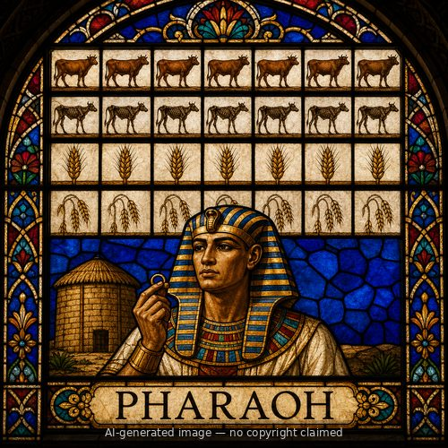

Pharaoh (M)
First named in Genesis 12:15-20
When a famine drove Abram down to Egypt, he told his wife Sarai to say she was his sister, fearing the Egyptians would kill him for her sake since she was beautiful (Genesis 12:10-13) -- a half-truth Abram would repeat later with another king (Genesis 20). Pharaoh's officials saw Sarai and praised her to Pharaoh, and she was taken into his household; Pharaoh treated Abram well for her sake, giving him sheep, oxen, donkeys, servants, and camels (12:14-16). But "the LORD struck Pharaoh and his house with great plagues because of Sarai, Abram's wife" (12:17). Scripture does not say how Pharaoh learned the truth, only that he did, and summoned Abram to confront him directly: "What is this you have done to me? Why did you not tell me that she was your wife? Why did you say, 'She is my sister,' so that I took her as my wife? Now then, here is your wife, take her and go" (12:18-19). Pharaoh then had his men send Abram away with his wife and everything he had (12:20). Despite being the wronged party, Pharaoh's household bore God's judgment for Abram's deception -- a striking early instance of God protecting the ancestral line of His promise even when the patriarch's own faith faltered and endangered it.
Thought for Today
Pharaoh unknowingly endangered Sarai, and God struck his household to protect His promise despite Abram's failing faith. Jesus's promised line was never left unguarded.
References: Genesis 12:15-20
Genealogy
Father
—Mother
—Spouse(s)
—Children
—Other people named Pharaoh
